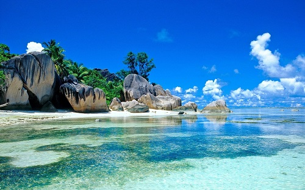
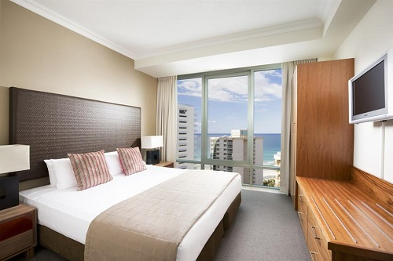
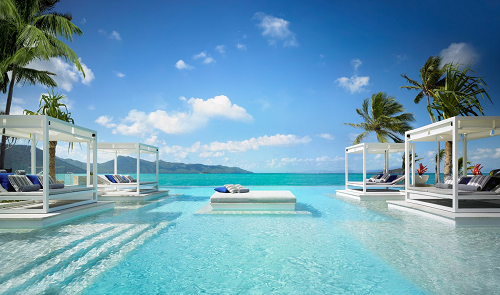
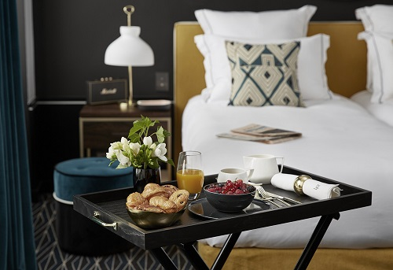

The R&C Hotel is a modern, elegant 4-star hotel overlooking the sea, perfect for a romantic, charming vacation, in the enchanting setting of Indian Ocean and the Sri Lankan Sea.
Read More...

The rooms at the R&C Hotel are new, well-lit and inviting. Our reception staff will be happy to help you during your stay Sri Lanka, suggesting itineraries, guided visits and some good restaurants in the historic centre.
Read More...

While you enjoy a cocktail by the swimming pool on the rooftop terrace, you will be stunned by the breathtaking view of the bay of Sri Lankan Sea. Here, during your summer stays, our bar serves traditional Sicilian dishes, snacks and salads.
Read More...

Available services include Voip telephone – ideal for low-cost international calls – Wi-Fi internet connection, breakfast and 24-hour reception.
Read More...
The R&C Hotel is a modern, elegant 4-star hotel overlooking the sea, perfect for a romantic, charming vacation, in the enchanting setting of Indian Ocean and the Sri Lankan Sea. We have two hotels, one is in Hikkaduwa & another one is in Hambanthota. We can organized our wedding halls as you wish. In Hikkaduwa R&C have 4 wedding halls and open sea view wedding side. You can arrange your wedding at sea side outdoor when you join with us. You can reserve our rooms using this site. We have supperb facilities in the Sri Lanka. you can enjoy your day or journey when you join with us.